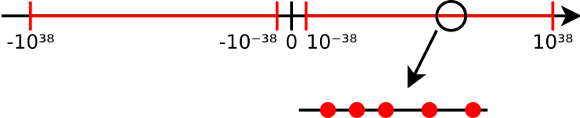

Operátorok: a kifejezések építőkockái
C puskát!
- Pl. matematikai műveletek jelei: +, -, *, /
- Operandusok: amiken a műveletet végzik
Mik az operandusok? – Szabályok
- Több is lehet:
a = -x;unáris (unary),b = x-y;bináris (binary), azaz egy- és kétoperandusú - Precedencia: különfélék „erőssége”, pl.
5+2*3 = 5+(2*3) - Asszociativitás: egyformák csoportosítása, pl.
a/b/c = (a/b)/c
Az operátorok precedenciája és asszocivitása tehát nem azt határozza meg, hogy egy nagyobb kifejezés melyik
részkifejezését értékeli ki időben előbb a program, hanem csak azt mondják meg, hogy melyik operátornak mi az operandusa.
Pl. egy a*b+c*d kifejezésben mindegy is, hogy előbb az a*b vagy a c*d részkifejezést
értékeljük ki. Ellenben az a/b/c kifejezés egészen mást jelentene, ha az osztás jobbról balra lenne asszociatív, mert
akkor a/(b/c)-t értenénk alatta, ami viszont nem ugyanazt az eredményt adja.
Az operátorok által leírt műveletek ún. kifejezésfákkal ábrázolhatóak. A kifejezésfa megadja, hogy melyik operátoroknak mely értékek az operandusai. A kifejezésfa már nem tartalmaz zárójeleket, annak a hierarchiája ugyanis egyértelműen meghatározza, hogy mely művelethez mely operandusok tartoznak. Az alábbi rajzokon sárga színnel jelöltük az operátorokat. Az ezekből lefelé kiinduló vonalak adják meg, hogy az adott operátorhoz mely operandusok tartoznak. A kék szín olyan részkifejezéseket jelöl, amelyek önmagukban kiértékelhetőek; ilyenek a változók és a konstansok. Ezekből már nem indulnak ki vonalak lefelé, nincsenek operandusaik.
3 * x + 8
6 * (y - 4)
a = -b
A 3*x + 8 kifejezés egy olyan összeget ad meg, amely két tagból áll. Az első tag egy szorzat
(3*x), a második tag pedig egy konstans (8). Vegyük észre, hogy ez nem attól van így, mert a szóközökkel
a tagokat csoportosítottuk, és nem is azért, mert bal oldalon van a szorzat! Hanem azért, mert a szorzás művelet magasabb rendű,
azaz a * operátor magasabb precedenciájú, mint a + operátor.
Ha nem megfelelő a precedencia, zárójelek közé zárhatjuk az egyes részkifejezéseket, ezzel módosíthatjuk az
operátor–operandus viszonyt. A 6 * (y-4) kifejezésben a szorzat jobb oldali tényezője a különbség; tehát egy olyan
művelet eredménye (a kivonásé), amelynek a precedenciája amúgy alacsonyabb, mint a szorzásé.
Az utolsó példa az a = -b kifejezést ábrázolja. Ebben két operátor szerepel, az értékadás és az ellentett képzése.
Az ellentett magasabb precedenciájú, és csak egyetlen operandusa van, a b változó. Az értékadás operandusai
pedig az a változó, továbbá az ellentettképzés eredménye, tehát az a szám, amit a -b kifejezés
kiértékelésével kapunk.
| Operátorok | Leírás |
|---|---|
[], (), ., -> | posztfix: indexelés, fv. hívás, struktúra mező |
+x, -x, !x | prefix: ellentett, tagadás |
*, /, % | multiplikatív: szorzás, osztás, maradék |
+, - | additív: összeadás, kivonás |
<, >=, ... | komparatív: kisebb, nagyobb |
==, != | komparatív: egyenlőség |
&& | logikai és |
|| | logikai vagy |
=, +=, ... | értékadás |
-2 + 3
a * b == c * d
!a && b
Az operátorok precedenciáját (erősségét) mutatja a fenti, amúgy hiányos táblázat. (Néhány operátorról később lesz szó.)
A táblázat tetején lévő, magas precedenciájú operátorok erősebben kötődnek az operandusaikhoz, mint az alul lévők. Tehát
ha egy kifejezést értelmeznénk, ezekből kell kiindulni. Ahogy az előző példákon is szerepelt, a 3 * x + 8 kifejezésben
a szorzás erősebb precedenciájú, mint az összeadás, és ezért adjuk a szorzathoz hozzá a 8-at.
Hasonlóképp, a -2 + 3 kifejezés is (-2) + 3-et jelent így zárójelezés nélkül is, mert
az ellentett a magasabb precedenciájú művelet. Így +1-et kapunk. Zárójelezve –5 lehetne az értéke: -(2 + 3).
A precedenciatáblázatot (nagyjából) úgy alkották meg, hogy intuitív legyen, a szokásos használatnál kevés zárójelre legyen szükség.
Nem véletlen, hogy az összehasonlító operátorok alacsonyabb precedenciájúak, mint a matematikai műveletek. Például az
a * b == c * d kifejezésben intuíció szerint két szorzatot hasonlítunk össze, és ezt a nyelv is pontosan így
értelmezi. Ez úgy valósul meg, hogy a szorzó operátor precedenciája magasabb, az összehasonlítóé pedig alacsony; vagyis
a szorzások „magukhoz vonzzák” a tényezőket, mintha (a * b) == (c * d) módon zárójelezük volna a kifejezést.
A !a && b kifejezésben a logikai tagadás, mint prefix (operandus elé írandó) operátor
igen magas precedenciájú. Vagyis ez a kifejezés (!a) && b-t jelent. Ha az a && b kifejezés
értékét szeretnénk tagadni, akkor zárójelezésre van szükség: !(a && b). Érdemes a szóközökkel kifejezni
azt a forráskódban, hogy mire gondolunk, tehát pl. ezt a kifejezést nem lenne jó ötlet ! a && b formában írni.
Ahogy rossz ötlet az is, ha a+b * c-t írunk, mert hiába tettük közel egymáshoz az összeadás két oldalán álló
változót, és távol a szorzás tényezőit, valójában mégis a+(b*c)-nek fogja ezt venni a fordító. A helyes, nem
megtévesztő írásmód ezért a + b*c vagy a + b * c.
Egy érdekesség: az unáris + operátor is létezik, viszont nem csinál semmit. 5 és +5
ugyanaz a szám, ahogy x és +x is ugyanannyi, függetlenül attól, hogy x pozitív vagy negatív.
Ezt azért van így, hogy a kódban kiemelhessük, hogy pozitív számról beszélünk, ahogy élő szóban is időnként mondjuk
ilyeneket: „plusz öt fok van”.
Előfordulhat az, hogy egy operátor többféleképp működhet?
int a = 5, b = 2;
double c = 5, d = 2;
double x;
x = a / b;
printf("%g\n", x); // 2
x = c / d;
printf("%g\n", x); // 2.5
x = (double)a / b;
x = a / (double)b;
printf("%g\n", x); // 2.5Polimorfizmus (többalakúság)
Az operátorok jelentése függhet az operandusok típusától:
a/b: osztás. Haaésbisint, egész osztás, ami lefelé kerekít!- Ha bármelyik lebegőpontos, az eredmény is az.
Az egész osztás sok esetben hasznos. Lásd a bankautomatás feladatot: ha az a kérdésünk, hogy 5500 Ft
kifizetéséhez hány ezresre van szükségünk. 5500/1000 = 5 darab ezres, és
5500%1000 = 500 Ft a maradék, amelyet máshogy kell megoldanunk, nem ezresekkel.
Ha valamelyik operandus valós, a másik automatikusan valóssá konvertálódik. Automatikus konverzió egyéb
esetekben is történik. Pl. short+int összeadás esetén a short típusú operandus a nagyobb ábrázolási
tartományú int típusúvá konvertálódik. Ugyanígy, int+long esetén az összeadás előtt az int
konvertálódik automatikusan, az 5+2.3 kifejezésben pedig az 5-ből lesz 5.0. Mindig a nagyobb
ábrázolási tartomány felé történik az automatikus konverzió, hogy ne amiatt legyen adatvesztés vagy túlcsordulás.
Kézi konverzió (cast)
- Ha két
intvan, de lebegőpontos osztást szeretnénk, jelezni kell - Konverziós (cast) operátort használva:
(double) x
Fontos megfigyelni, hogy jobb oldalt látható kódban az x=a/b kifejezésben
az eredmény még így is 2, hogy utána azt a double x
változóba másoljuk! Az értékadás egy újabb operátor, amelynek az osztás eredményébe
már nincsen „beleszólása”. Az osztás egész/nem egész jellege nem azon múlik, hogy az
elvégzése után mit csinálunk az eredménnyel! Ha az osztás valamelyik operandusát
lebegőpontos számmá alakítjuk azáltal, hogy elé a (double) operátort
írjuk, már nem egész osztás fog történni. A konverziós operátorok nagyon magas
precedenciájúak: mindig közvetlenül arra az értékre vonatkoznak, amelyek elé írjuk őket.
A konverzió segítségével más típusúvá alakítható egy érték. Egy lebegőpontos
érték elé (int)-et írva egésszé alakítható az, természetesen a törtrészt
elveszítve. Számtani műveletek esetén ritkán kell kézi konverziót alkalmazni. Más típusoknál, a
mutatóknál, amelyek egy későbbi előadáson fognak szerepelni, nagyobb szerepet kapnak a
konverziók. De ezekről majd később.
A printf() értéke
123, 456, 1234, 0, 6, 12, 11, 1, 1234577, 93628, 2, 4, 9, 1, 3,
A printf() függvény, amellett hogy kiírja
a megadott szöveget a képernyőre, megadja a kiírt karakterek
számát is. Ez hasznos lehet, ha azt szeretnénk vizsgálni, a sor végére értünk-e már. A jobb oldalon
látható dobozban például az egyes sorok nagyjából egyforma hosszúak, függetlenül attól, hogy
az egyes számok hány számjegyből állnak. Kicsi számokból sok kifér egy sorba, nagy számokból kevés.
A kimenetet ez a programrész generálta:
int db = 0;
for (int i = 0; szamok[i] != -1; i += 1) {
db += printf("%d, ", szamok[i]); // !
if (db > 15) {
printf("\n");
db = 0;
}
}Erre azt mondjuk, hogy a printf() műveletnek van
értéke és mellékhatása is. Az érték a kiírt karakterek száma,
a mellékhatás pedig a szöveg kiírása.
A mellékhatás a programozásban nem jelent rosszat! A printf()-et általában épp a mellékhatása
miatt használjuk: a kiírás a lényeges, az értékkel, a karakterek számával ritkán foglalkozunk. De ettől még a kiírás
technikailag egy mellékhatásnak számít.
Érték és mellékhatás: példák
Összehasonlításképp:
printf("hello")Érték: 5
Mellékhatás: szöveg kiíródása
sqrt(2)Érték (value): 1,414
Mellékhatás (side effect): nincs
Érték és mellékhatás
Az operátorok esetén az érték és a mellékhatás fogalmát ugyanígy használjuk.
- Érték (value)
- A műveletnek értéke van, amely behelyettesítődik a kifejezésbe, ahol használjuk.
- Mellékhatás (side effect)
- Történik valahol egy változás, pl. megváltozik egy változó értéke, megjelenik valami a képernyőn.
Lássunk két kifejezést a mellékhatás és az érték megértéséhez.
x + yÉrték: az összeg
Mellékhatás: nincs
x = yÉrték: a másolt szám
Mellékhatás: x megváltozik
Miért fontos a mellékhatás figyelembe vétele? A mellékhatással nem rendelkező operátorokkal leírt képletek
mindig ugyanazt az eredményt adják. Az x+y kifejezésnek nincs mellékhatása, ezért akárhányszor is kiértékeljük,
ugyanazt a számot fogjuk kapni. Ezzel szemben, az x+=1 kifejezésnek van mellékhatása: nem ugyanaz lesz az eredmény
elsőre, másodjára, harmadjára.
Az értékadás értéke
a = b = 1;
a = (b = 1); // jobbról balra asszociatív
b = 1; a = 1;A mellékhatás jelenti a változtatás képességét. Az =
operátort a mellékhatása miatt használjuk. Az értékével ritkán
törődünk, viszont pont az teszi lehetővé a láncolt értékadást: pl.
az a=b=1 kifejezés mindkét változóba 1-et tesz. Így rövidebben, kifejezőbben
tudjuk leírni, hogy mindkét változónak ugyanazt az értéket szeretnénk adni.
Hogy működik egy ilyen láncolt értékadás? Az =
értékadó operátor jobbról balra asszociatív, tehát az a=b=1 kifejezés pont
ugyanúgy működik, mintha a=(b=1) formában zárójeleztük volna. Így már érthető:
az 1-es érték a b változóba másolódik (mellékhatás), a b=1 részkifejezés
értéke pedig a másolt érték, az 1. Ezt kell helyettesíteni a kifejezésbe a b=1
helyére: a=(1), innen pedig már látszik, hogy az a-ba is 1 kerül.
Az értékadás az egyik legfontosabb operátorunk, mert ezzel tudjuk változtatni
a változók értékét a program futása során. Nem minden kifejezés állhat azonban az értékadás bal
vagy jobb oldalán: a=1 és szamok[2]=5 helyes, viszont 1=a
és a+2=3 helytelen kifejezések. Értéket adni változóknak, tömbelemeknek tudunk: ezeket
balértéknek (left, l-value) nevezzük, mert ilyenek állhatnak egy értékadó operátor bal oldalán
is. Az értékadó operátor kizárólag jobb oldalára írható értékeket pedig jobbértéknek (right value,
r-value) nevezzük. Általában véve a balértékek valamiféle változók szoktak lenni, a memóriában
megjelölt helyek; a jobbértékek pedig számértékek, számítások eredményei, amik nem kötődnek helyhez.
A balérték, jobbérték kifejezéseket ismerni kell, mert a
fordítók hibaüzeneteiben gyakran megjelennek. Például az 5=6
kifejezésre az „lvalue required as left operand of assignment” jelzést kapjuk,
vagyis hogy az értékadás bal oldali operandusaként egy balérték kellene szerepeljen.
Mindezek érvényesek az összes kombinált értékadó
operátorra is: +=, -= stb.
printf("%d", a = b); // neeeee
a = b;
printf("%d", a);Az értékadás kifejezés értéke miatt olyanokat is lehet írni, mint a
fenti printf – de nem érdemes. Az ilyesmi csak zavart okoz. Bár a
fordító által készített gépi kód úgyis teljesen ugyanaz lesz, inkább kerüljük a
felesleges tömörítést! Jobb külön, két sorba leírni a két, egymástól logikailag
független teendőt (értékadás, kiírás).
Rövidített értékadások
x = x + 1;
x += 1;y = y / 5;
y /= 5;Mint láttuk, az összes aritmetikai művelet rövidítve is leírható, ha egy változóból kiolvasott adattal
szeretnénk dolgozni, és visszaírni az eredményt ugyanabba a változóba. Így lesz az x = x+1-ből x += 1,
és az y = y/5-ből y /= 5.
A ++ és -- operátorok
int i = 5;
++i;
printf("%d", i); // 6int j = 5;
--j;
printf("%d", j); // 4Egy változó eggyel növelése és csökkentése nagyon gyakori művelet. Leginkább ciklusokban és tömböknél
használjük őket: következő lépés, előző elem, és így tovább. Emiatt ezekhez egy még rövidebb formát kitaláltak, külön operátorokkal
jelölhető a „növeld meg eggyel a változót”, és „csökkentsd le eggyel a változót”. Vagyis az „ugorj a következő elemre”, és „lépj
vissza az előző elemre”. Ezek az operátorok ++ és --, az ún. inkremens (increment) és dekremens
(decrement) operátorok.
Ezt a két operátort a változó neve elé és mögé is lehet írni. A kettő azonban nem ugyanazt jelenti,
és bizonyos esetekben a programunk jelentése függhet attól, hogy melyiket használjuk: a ++x vagy az x++
formát. Ettől függően nevezzük ezt preinkremensnek (++x) vagy posztinkremensnek (x++).
A hatása mindkét változatnak ugyanaz. A ++x és az x++ kifejezés is megnöveli az x
változót eggyel. Különbséget akkor látunk, ha a ++x és x++ műveletet egy nagyobb kifejezésbe
írjuk be. Figyeljük meg ezt az alábbi programrészletekben! A lényeg azokban a sorokban van, ahol az y-nak
értéket adunk: először a ++x kifejezés, aztán az x++ kifejezés értékét kapja meg.
#include <stdio.h>
int main(void) {
int x = 3;
int y = ++x;
printf("x = %d, y = %d", x, y);
printf("\n\n");
int a = 3;
int b = a++;
printf("a = %d, b = %d", a, b);
return 0;
}x = 4 y = 4 a = 4 b = 3
A program futási eredmény nagyon jól látszik a különbség. A ++x esetben a kifejezésben felhasznált érték már a
megnövelt szám. Így az y változó értéke 4 lesz, mert előbb megnöveljük az x-et, és utána használjuk fel a
változó értékét, ami addigra 3-ról 4-re változott. Nem így az a++ forma esetén, ahol az b változóba a
növelés előtti érték kerül, vagyis 3.
Vegyük észre, hogy a ++ operátornak a hatásra a változóra mindkét esetben ugyanaz. Az x-en és az
a-n alkalmaztuk, tehát ezek mindkét esetben megnőttek eggyel. Az y és b értéke lett más,
mert az a növelés utáni, vagy még a növelés előtti értéket kapta. Ezért nevezzük a ++x formát preinkremensnek (pre:
előbb növeljük, utána felhasználjuk az értékét), az a++ formát pedig posztinkremensnek (előbb felhasználjuk, és utána
növeljük csak meg). Melyik melyik? Ezt könnyű megjegyezni: ha előbb van a ++, akkor előbb történik a növelés, ha pedig
csak a változó neve után, akkor a növelés marad utoljára.
A dekremens operátor ugyanígy működik, annak is létezik predekremens és posztdekremens változata: --x és
x--.
Ciklusban vagy önmagában
for (int i = 1; i <= 10; ++i) {
/* ... */
}Nem használjuk az értékét. Itt teljesen mindegy, melyik változatot írjuk, az i++ vagy
a ++i alakot.
Gyakori félreértés, hogy a fenti ciklusba i++-t írva más számokat kapunk eredményül, de ez nem igaz.
Hiába van posztinkremens az egyik, preinkremens a másik ciklusban, mind a kettő 1-től 10-ig írja ki a számokat:
for (int i = 1; i <= 10; i++) // ugyanaz, mint a fenti
printf("%d ", i);A kiértékelési pontok (lásd lentebb) ismeretében könnyű megmagyarázni, miért lesz ugyanaz a kimenet. Az egyik kiértékelési pont a
ciklustörzs vége után van, azaz a printf() után; a másik kiértékelési pont pedig a ciklusfeltétel, az i <=
10 ellenőrzése előtt. Mire ide ér a végrehajtás, addigra az i változó garantáltan megnőtt, függetlenül
attól, hogy pre- vagy posztinkremens operátort használtunk. Az utasítások mindkét esetben önmagukban állnak, két kiértékelési
pont között.
Tömb feltöltése
scanf("%d", &x);
szamok[db++] = x;| 0. | 1. | 2. | 3. | 4. |
|---|---|---|---|---|
| 12 | 43 |
Itt a posztfix formát használjuk. A darabszám régi értéke az index; oda beírjuk, utána növeljük. Pl.
ha db = 2, az új elem szamok[2] helyre kerül, utána db = 3 lesz. Ami pont stimmel, hiszen az
5 elem a szamok[0]…szamok[4] helyeken van.
A mellékhatások kiértékelési pontokig (sequence point) érvényesülnek.
- Utasítás végén:
;vagy} if,while,forfeltétele után- Néhány operátornál menet közben: logikai és vessző
- Függvényhívás előtt az összes paraméter kiértékelődik
„A szabvány által nem definiált”
- A kiértékelési pontok között a mellékhatások sorrendje kötetlen!
- A függvényparaméterek kiértékelési sorrendje kötetlen
- Ha kell, több utasításba szedéssel, segédváltozók használatával kényszeríthetjük a sorrendet.
- Helytelen:
a = a++; - Viszont helyes:
while (scanf("%c", &c) == 1 && c != '\n')
Ne írjunk olyan kódot, ahol többször használjuk egy változó értékét, amelyre mellékhatás is van! Be kell tartani a következő szabályokat:
- Ne zsúfoljunk egy kifejezésbe több mellékhatással rendelkező műveletet!
- Ne keverjük a mellékhatással rendelkező és a rövidzáras operátorokat!
- Ne tegyünk az
if,while… utasítások feltételébe fölöslegesen mellékhatás kifejezést!
Ilyenekre úgysem lesz szükség programozás közben. Ha mégis megsértjük ezeket a szabályokat, nemcsak azt kockáztatjuk, hogy követhetetlen és olvashatatlan lesz a programunk, hanem azt is, hogy nem fog működni. Különböző fordítók (de még akár ugyanaz a fordító is, más beállítások mellett) másképpen fogják értelmezni a kódot! Ettől nem rossz a C. Sőt emiatt lehet gyors, és emiatt van minden elképzelhető fajta számítógépre C fordító. Csak be kell tartanunk a játékszabályokat.
A fentiek miatt nemcsak értelmetlen, hanem még hibás is az a = a++; utasítás.
Ez nem csak amiatt rossz, mert a ++ operátornak amúgy is van
mellékhatása (az már amúgy is megváltoztatja az a változót), hanem
mert nem lehet megmondani, mi lesz az eredménye. Itt egy kifejezésen belül,
tehát ugyanazon kiértékelési pont előtt az a változót két mellékhatás
is érinti. Az egyik az értékadó operátor mellékhatása, a másik pedig a posztinkremens
operátoré. Ezekről nem lehet tudni, hogy milyen sorrendben fognak megtörténni. Ha
előbb az értékadás történik meg, utána az inkrementálás, akkor a értéke
megnő eggyel. Ha előbb az inkrementálás, és csak utána az értékadás, akkor a
értéke nem változik, mivel a posztinkremens kifejezés értéke a változó növelés
előtti értéke.
A „3 operandusú operátor” (ternary operator)
- Formája:
feltétel ? igaz_kif : hamis_kif - Értéke: ha IGAZ a feltétel,
igaz_kif, különbenhamis_kifértéke.
Mint Excel-ben aHA()függvény.
Ezt az operátort kérdőjel–kettőspont operátornak, vagy feltételes operátornak szokás nevezni. Néha, főleg angol nyelvű szakirodalomban három operandusú operátornak is nevezik, mivel ez az egyetlen, amelyiknek három operandusa van.
Használata
Melyik a nagyobb?
nagyobb = a > b ? a : b;A feltételes operátor itt azért jó, mert egyértelműsíti, hogy a nagyobb nevű változónak adunk értéket. Ha
utasításokkal fejtjük ki, akkor ez az értékadás már duplikáltan kell megjelenjen. Ilyenkor a kódot olvasva csak akkor fogunk
rájönni, hogy a változó mindenképp kapott értéket, ha megnézzük a hamis és az igaz ágat is:
if (a > b)
nagyobb = a;
else
nagyobb = b;Páros vagy páratlan?
int x;
scanf("%d", &x);
printf("%s", x % 2 == 0 ? "páros" : "páratlan");Itt a "páros" és "páratlan" sztringek közül választjuk ki az egyiket,
a szám paritásától függően. A printf() függvény a formátumsztringen túl már csak egyetlen egy sztringet kap.
A logikai &&, || rövidzár tulajdonsága
if (b != 0 && a/b > 3) // elkerüljük a 0-val osztást
/* ... */;
if (i < meret && tomb[i] > 0) // túlindexelés elkerülése
/* ... */;Gondoljunk egy pillanatra az ÉS, illetve a VAGY műveletek igazságtáblájára. Az alábbiakat mondhatjuk:
A && B: ha A=HAMIS, nem számít B, az egész biztosan HAMISA || B: ha A=IGAZ, a kifejezés értéke biztosan IGAZ
A nyelv ÉS, illetve VAGY operátorai ezt figyelembe is veszik. Ha az első operandusból kiderül az eredmény, a második operandus már ki sem értékelődik. Bár matematikailag ez a két művelet kommutatív, a programozásban emiatt mégsem mindegy, hogy milyen sorrendben írjuk az operandusaikat.
A rövidzár tulajdonságot a fenti kódrészletekben ki is használjuk – lásd a kommenteket.
A ?: operátor rövidzár tulajdonsága
z = x > y ? x++ : y++; // neeeeA rövidzár tulajdonság olykor hasznos, de mellékhatásokkal kombinálva veszélyes, mert áttekinthetetlen,
érthetetlen programokhoz vezet. Ilyen a fenti is. Első ránézésre úgy tűnik, hogy mindkét változó értéke megnő eggyel.
De ez nem igaz, hanem a kettő közül csak a nagyobbik fog nőni, mert x>y esetén csak az x++, amúgy
csak az y++ kifejezés értékelődik ki, és csak annak a mellékhatása történik meg.
Lehetőleg kerüljük az ilyesmit, ne írjunk ilyeneket! Ne használjunk olyan kifejezést a rövidzár
tulajdonsággal rendelkező operátorok operandusaként, amelynek mellékhatása van!
Több kifejezés egymás utáni kiértékelése egy kifejezésben; értéke az utolsó kifejezés értéke.
Leggyakrabban for ciklus fejlécében:
példa
for (unsigned i = 0, j = 1; i < 4; ++i, j *= 2)
printf("Kettő %u. hatványa: %u\n", i, j);Kettő 0. hatványa: 1 Kettő 1. hatványa: 2 Kettő 2. hatványa: 4 Kettő 3. hatványa: 8
Vigyázat, függvényhívás paraméterei: az nem vessző operátor!
Logikai ÉS, VAGY operátorok helyett se használjuk! Tipikus hiba ciklusfeltételbe vesszőt írni valamelyik logikai operátor helyett:
while (oszto < szam, !vanoszto) { // HIBÁS!
...
}Ez a C számára nem azt jelenti, hogy „amíg osztó kisebb számnál ÉS nincs osztó”,
hanem azt, hogy „amíg nincs osztó”. A vessző operátor kiértékeli a bal oldali részkifejezést
(szám és osztó összehasonlítása), utána ezt eldobja, és a ciklus feltételének a
!vanoszto értékét tekinti. Tehát oszto>=szam esetén is
fut tovább a ciklus!
#include <stdio.h>
int main(void) {
/* 1. */
printf("%d %d\n",
printf("hello,\n"),
printf("vilag\n"));
/* 2. */
double a = 2, b = 3, c = 5;
printf("%f", a
---
b+c
);
return 0;
}Az első: printf, printf, printf
Ha mellékhatások vannak a programban, akkor nem mindegy a műveletek sorrendje.
Az a = b; b += 1; nem ugyanazt csinálja, mint a b += 1; a = b;
utasítássorozat: nem mindegy, hogy a növelés előtti vagy utáni értéket másoljuk.
Egy ezzel kapcsolatos furcsaságot szemléltet a fenti programrész.
A printf("%d %d\n", ...) kiírás előtt elő kell
állítani a printf() paramétereit, a két számot. A printf("hello,\n") értéke 7
(5 betű, a vessző és a sortörés), a printf("vilag\n") értéke 6 lesz. Azonban nem mindegy, hogy
melyik történik meg előbb: a világ, vagy a helló szöveget látjuk előbb a képernyőn. Így a kimenet
lehet „hello, vilag 7 6”, de esetleg lehet „vilag hello, 7 6” is.
Ha kicsit utánajárunk, kiderül, hogy nem tudjuk megmondani, melyik lesz. A paraméterek kiértékelési sorrendjét a fordító szabadon megválaszthatja, a mellékhatások esetleg a nem várt sorrendben történhetnek meg. Így még az is előfordulhat, hogy egyik fordítóval kipróbálva „hello, vilag 7 6”-ot kiíró programot, másik fordítót használva „vilag hello, 7 6”-ot kiíró programot kapunk.
Emiatt tudnunk kell, hogy nem szabad ilyen kódot írni. Miért olyan fontos ez? Adódhatnak
olyan esetek, ahol nem ennyire egyértelmű a hiba. Tegyük fel, hogy van egy beolvas()
nevű függvényünk, amely a billentyűzetről kér egy számot, és visszaadja értékként. A
beolvas() + beolvas() kifejezés kiértékeléséhez kétszer is használni kell
ezt a függvényt, a felhasználó két számot kell kapjon. Kérdés, hogy melyik lesz az összeadás
bal és jobb oldali operandusa? Az összeadás kommutatív, ezért mindegy – viszont ha
beolvas() - beolvas() kifejezést írunk, akkor már korántsem ez a helyzet! Nem mindegy,
hogy melyik a kisebbítendő és a kivonandó, mert a rossz sorrend esetén a várt eredmény ellentettjét
kapjuk.
Ilyen esetben különálló utasításokat kell írnunk, mert úgy különálló, ún. kiértékelési pontokat helyezünk el a programban. A fenti példák helyesen:
int h = printf("hello,\n");
int v = printf("vilag\n");
printf("%d %d\n", h, v);
int kisebbitendo = beolvas();
int kivonando = beolvas();
printf("Különbség: %d", kisebbitendo - kivonando);A második: a/(b+c)?
C-ben lenne tört? Nem, nincs ilyen. Valójában a három egymás melletti mínusz karaktert egy posztdekremens és egy kivonás
operátornak dolgozza fel a fordító. Valahogy így: (a--) - b + c. Ebből már következik, hogy a - b + c
értéke jelenik meg, azaz 2 - 3 + 5 == 4. És mellesleg az a változó értéke 1-re
változik.
Memória működése: számok tárolása
Ez tárolja az adatokat és a programokat.
- Karakterek → számok
- Képek → fényesség értékek → számok
- Hang → levegőnyomás értékek → számok
- Gépi utasítások (mov, add) → számok
Érdekesség: A végrehajtott program, és az adatok, amelyeken a program dolgozik, lehetnek külön memóriában is. Az első automatikusan működő számítógépek a programot nem a belső memóriájukban tárolták, hanem papírszalagról vagy lyukkártyáról olvasták be azt futás közben. Ennek egyszerűen az volt az oka, hogy nagyon költséges és bonyolult volt relékből (lásd lent) memóriát csinálni. A tervezők pedig ott spóroltak, ahol tudtak.
Ahogyan a technika fejlődött, úgy vált lehetővé, hogy a programot is a központi memóriában tárolják. Ezt az elvet Neumann János (John von Neumann) javasolta kollégáival, és ma Neumann-féle architektúrának nevezzük. Az első ilyen elven működő számítógép az EDVAC nevet viselte. Ez egyben az első kettes számrendszert használó, már nem elektromechanikus, hanem teljesen elektronikus számítógép is volt. A külön programmemória elve a fentiek ellenére nem halt ki: ezt ma Harvard architektúrának nevezzük, az EDVAC-nál régebbi Mark I számítógép nyomán.
CPU működése
Processzor, CPU (central processing unit): Ez hajtja végre a fordító által gépi kóddá alakított programjainkat.
- Elemi, egyszerű lépések: gépi utasítások
- A fordítóprogram állítja elő a C forráskódból
x += 2;mov eax, [1055] ; x memóriából processzorba add eax, 2 ; processzor hozzáad 2-t mov [1055], eax ; eredmény memóriába
A számítógép processzora rendkívül egyszerű, gépi nyelvű utasításokat tud csak végrehajtani. A gépi nyelvnél legtöbbször még egy egyszerű változónövelést is három lépésre kell bontani: 1. a változó értékének kiolvasása a memóriából, 2. az érték növelése, 3. az érték visszaírása a memóriába. A processzor a működés közben így legtöbbet a memóriával kommunikál, jóval többet, mint bármelyik perifériával. Főleg, hogy általában a számítógépeknek közös memóriájuk van az adatok és programok számára.
A római számokkal bizonyos műveleteket, pl. az összeadást nagyon könnyű elvégezni: pl. III + VIII = VIIIIII = VVI = XI. Más műveletek, a szorzás és az osztás bonyolultak. A matematikusok nagy találmánya a nullás számjegy: ez teszi lehetővé azt, hogy tömören (kevés számjeggyel), ugyanakkor helyiértékenként egységes jelölésrendszerrel tudjuk leírni a számokat. A nullás számjegy a leírt számokban helyőrzőként szerepel: a 203 számban pl. azt jelzi, hogy az 2-es a százasok számát tárolja. A hindu-arab számírásban nincs külön jele az egynek, tíznek, száznak, ezernek. (Vegyük észre: a tízes csoportosítás ettől független! A római számokban is létezik már az 1-10-100-1000 fogalma. Nem a tízes csoportosítás a lényeg, hanem a jelölésmód, ami a nulla bevezetésével válik lehetővé.)
A mindennapi életben a tízes számrendszert használjuk. Ebben az egyes helyiértékek a 10 hatványait követik. Ennek oka nagyon egyszerű: azért alakult így ki, mert tíz ujjunk van. Más számrendszerek is használhatóak, és a hindu-arab számírás logikus felépítése miatt ezekben a szabályok pontosan ugyanazok, mint a tízes számrendszerben.
| alap | példa |
|---|---|
| 10 decimális | 1203tíz = 1·103 + 2·102 + 0·101 + 3·100 |
| 8 oktális | 377nyolc = 3·82 + 7·81 + 7·80 = 255tíz |
| 2 bináris | 1101kettő = 1·23 + 1·22 + 0·21 + 1·20 = 13tíz |
A létező legegyszerűbb számrendszer a kettes alapú. Ebben csak kétféle számjegy van, a 0 és az 1. Hogy miért ez a legegyszerűbb? Mert ebben az összeadó és a szorzótábla nem tízszer tízes, hanem mindössze kétszer kettes.
| + | 0 | 1 |
|---|---|---|
| 0 | 0 | 1 |
| 1 | 1 | 10 |
| × | 0 | 1 |
|---|---|---|
| 0 | 0 | 0 |
| 1 | 0 | 1 |
Érdekesség: kapcsolók generációi
A mai számítógépek digitális elven működnek. Csak egész számokkal tudnak dolgozni, amelyeket kettes számrendszerben tárolnak. A kettes számrendszer előnye az, hogy csak két számjegy van benne: 0 és 1. Ez elektronikusan könnyen kezelhető (nincs áram, van áram), ezért a működést kapcsolók adják. Bármi, ami kapcsolóként tud működni, az használható számítógép építésére is.
Az alábbi fényképek a számítógépek generációit mutatják. Ezek elvben nem különböznek egymástól, csak a gyakorlatban, méghozzá abból az egyetlen szempontból, hogy milyen elektronikus, vagy esetleg még elektromechanikus eszközt használtak kapcsolónak. Az első három képen lévő eszköz egyetlen kapcsolónak felel meg, míg a jobb alsó képen látható integrált áramkörön már sok millió kapcsoló van. Összehasonlításképp: 3-4000 kapcsoló használatával már egészen jól használható processzor tervezhető, egy Core i7 processzorban viszont már 730 millió darab van.
Relék (relay): az áram hatására a bennük lévő tekercsben (jobb oldalt) mágneses tér keletkezik, és így lehet vezérelni a kapcsolót (bal oldalt). Egy ilyen eszköz kb. 3-4 cm nagy. Manapság is használnak ilyet nagyobb áramok kapcsolására, pl. autókban is.
Elektroncső (tube): a bennük lévő vákuumban repülő elektronok mozgása vezérelhető az elektromos tér változtatásával. Ezek is viszonylag nagyok: 3-4 cm, ráadásul fűteni kell a belsejüket, hogy az elektronok kilépjenek a fémből.
Tranzisztor (transistor): a félvezető anyagok vezetőképessége (ellenállása) elektromos úton szabályozható, így kapcsolónak is használhatóak. A képen látható tranzisztorban a félvezető szilícium darabka 1 mm-nél is kisebb. A védő fém vagy műanyag tokozás nagyobb, 3-4 mm-es.
Integrált áramkör (integrated circuit): ebben is tranzisztorok vannak, azonban az előzőnél jóval kisebbek. Egy 1 cm2 méretű szilícium lapra akár több tízmillió transzisztor integrálható, amelyek egyesével alig néhány tíz nanométeresek (vagyis méretük egy ember hajszál vastagságának ezrede). A fenti processzor mikroszkóp alatt forgatva egy videón is látható.
A számrendszerek közötti átalakítás könnyű: csak el kell osztanunk (vagy meg kell szoroznunk) a számokat, számjegyeket az adott számrendszer alapszámának hatványaival.
Átalakítás kettesből tízesbe
Az átalakítás lépései: a szám számjegyeit (alaki értékek) összeszorozzuk kettő megfelelő hatványaival (helyi értékek). Az így kapott számok (valódi értékek) összege adja az eredményt.
| helyiérték | ×64 | ×32 | ×16 | ×8 | ×4 | ×2 | ×1 |
|---|---|---|---|---|---|---|---|
| számjegy | |||||||
| valódi érték |
Átalakítás tízesből kettesbe
Az átalakítás lépései: a számot leosztjuk kettő első olyan hatványával, amely kisebb nála. Az eredmény egy számjegy, a maradékot pedig felírjuk a következő oszlopba. Így folytatjuk az egyre kisebb hatványokkal, amíg el nem érünk 0-ig. (A legutolsó esetben eggyel osztunk, aminek a maradéka biztosan nulla lesz.) Az osztások során sehol nem kaphatunk 1-nél nagyobb értéket; ha ilyen történne, akkor kettő egy nagyobb hatványától kell indulnunk.
| helyiérték | /64 | /32 | /16 | /8 | /4 | /2 | /1 |
|---|---|---|---|---|---|---|---|
| maradék | |||||||
| számjegy |
A más számrendszerekbe átalakítás ugyanígy működik, csak az ottani alap hatványait kell használni.
Bitek és bitcsoportok
- bit
- Az információ alapegysége: 0 vagy 1.
- bájt (byte): a memória (adatkezelés) egysége
- Jellemzően 8 bites csoport.
- szó (word): több bájtos adategység
- Általában 4 bájt (32 bit), vagy 8 bájt (64 bit).
Előtagok (prefix)
A kettes számrendszerbeli működés miatt a szokásos mértékegységeknek megvan a bináris párja. Bár a kilo- előtag általában ezret jelent, a számítástechnikában inkább 1024-et, azaz 210-t. Ezt azért választották meg így, mert a kettő között nagyon kicsi a különbség. Sajnos gyakran keverik is a kettőt. A merevlemezgyártók például előszeretettel használják a kilo=1000 jelölést, mert így nagyobb kapacitást írhatnak rá az eladott merevlemezekre. Hogy ne kelljen mindig hozzátenni, ha pontosak akarunk lenni, hogy a bináris vagy a decimális prefixumról beszélünk, bevezették a kibibájt, mebibájt stb. jelöléseket. Egy DVD kapacitása így 4,7 gigabájt, azaz 4,3 gibibájt.
- kilobájt (kB) és kibibájt (KiB)
- 103=1000 ≈ 210=1024 bájt.
- megabájt (MB) és mebibájt (MiB)
- 106=1000000 ≈ 220=1048576 bájt.
- gigabájt (GB, GiB), terabájt (TB, TiB)
- 109≈230 és 1012≈240 bájt.
Érdekesség: A „binary digit”, azaz bináris számjegy szókapcsolatot eredetileg „bigit” vagy „binit” néven rövidítették. Később a „bit” szót John Tukey, amerikai matematikus javasolta. (Ő találta ki a „software” szót is.) A bit szó tudományos írásban először Claude Shannon diplomamunkájában szerepelt, amelynek címe A Symbolic Analysis of Relay and Switching Circuits. Ebben megmutatta, hogy az addig telefonközpontokban használt relék segítségével logikai problémák is megoldhatóak. Pár évvel később megépült az első relékből felépített, kettes számrendszert használó számítógép, a Harvard Mark I. Azóta gyakorlatilag nem készül olyan számítógép, amely nem bináris elven működne.
Mivel a számítógép nem végtelen nagy, a tárolt adatok sem lehetnek azok. Ha szeretnénk egy számot eltárolni, akkor arra egy véges, fix méretű memóriaterületet kell kijelölnünk. Ezáltal keletkezik „legkisebb” és „legnagyobb” szám, bár matematikailag ez értelmetlenül hangzik. A számítógépen használt számok emiatt a matematikai számfogalomnak csak tökéletlen modelljei. A matematika számai lehetnek egészek, racionálisak, irracionálisak – a programjainkban ezzel szemben rögzítenünk kell, hogy egy változó típusa egész-e vagy nem, sőt még a tartományban és a pontosságban is be vagyunk korlátozva.
| név | méret | tartomány | printf, scanf | megjegyzés |
|---|---|---|---|---|
| signed char unsigned char | 8 bit | -128…127 0…255 | legkisebb, mindig 1 bájt | |
| signed short int unsigned short int | 16 bit | -32768…32767 0…65535 | %hd %hu | |
| signed int unsigned int | 32 bit | -231…231-1 (±2·109) 0…232-1 (4·109) | %d %u | tipikus szóhossz a gépen |
| signed long int unsigned long int | 32 vagy 64 bit | %ld %lu | ||
| signed long long int unsigned long long int | 64 bit | kb. ±9·1018 kb. 0…1,8·1019 | %lld %llu |
Literálisok: 123, 123u, 123l, 012, 0xFCE2
Egy egész szám tárolására egy vagy több bájtot foglalunk le. A számítógép ezeket általában „hardverből”, áramkörileg tudja
kezelni. Az egész típus neve a C-ben int, amelyhez társulhatnak ún. módosító jelzők (specifier). Pl. az
unsigned jelző az előjel nélkülit jelenti, a signed pedig az előjelest. Vannak bizonyos
alapértelmezések:
- Az
inttípus (méret megadása nélkül) mindig azt a méretet jelenti, amely az adott számítógépen az optimális, vagyis amellyel a processzor leggyorsabban tud dolgozni. Ez manapság a 32 bitest szokta jelenteni, de lehetnek eltérések. - Ha nincs
signedvagyunsignedmegadva, akkorsigned, azaz előjeles lesz a változó. Kivétel achar: ennél nincs alapértelmezés. Ajánlatos így használni:char: betűsigned char: 1 bájtos, előjeles egész számunsigned char: 1 bájtos, előjel nélküli egész szám
- Ha van módosító megadva, akkor az
intszó elhagyható. Pl.long x;ugyanaz, mintlong int x;éssigned x;ugyanolyan típusú változót hoz létre, mint asigned int x;utasítás.
signed long a;
short b; /* signed short */
unsigned c; /* unsigned int */A szabvány nem köti meg a típusok pontos méretét, csak a minimális méreteket, hogy minél többféle számítógépen működhessenek a C programok.
A fenti táblázat a tipikus értékeket mutatja. Ritka, de van, ahol a char 9 bites vagy az int csak 16!
Erre figyelni kell, amikor hordozható (portable) programokat szeretnénk írni, amelyek különféle gépeken működnek. Főleg, ha
Interneten kommunikálnak egymással vagy egymás fájljait kell olvassák.
Újabb C szabványokban a printf() és a scanf() a signed és unsigned char-t
is ismeri; %hhd és %hhu a hozzájuk tartozó formátumjelző.
Ritkán fontos, de a forráskódba írt konkrét számok (literálisok) típusa is jelezhető. Pl. 123 típusa int,
ugyanakkor 123u típusa unsigned int, és 123l típusa long.
Gyakrabban használjuk a számrendszer megadását. A 0-val bevezetett literális 8-as számrendszerben van, és értéke
10. A 0x-szel bevezetett literális 16-os számrendszerben van.
A 16-os számrendszer
- 4-es csoportokban (nibble) átalakíthatóak
- Pl. 10011111kettő = 9ftizenhat
- A 10…15 alaki értékek jelölésére az a…f vagy A…F betűket használjuk
A kettes számrendszerben leírt számok nagyon sok számjegyből állnak. Ezért sokszor helyette a tizenhatos (hexadecimális) számrendszert szoktuk használni. Ez „rokon” a bináris számrendszerrel. Mivel 24=16, a bitek négyes csoportokban adnak egy hexadecimális számjegyet.
Használhatnánk a nyolcas számrendszert is azzal a céllal, hogy spóroljunk a számjegyekkel. Azzal azonban van egy kis gond. Manapság szinte mindegyik számítógépen nyolc bites a bájt. Ha egy ilyet nyolcas számrendszerben írunk le, akkor 2-3-3 bites csoportok adódnak: 10'101'111kettő=257nyolc. Ezzel önmagában nem is lenne probléma, azonban ha egy két bájtos, azaz 16 bites számot szeretnénk átírni, akkor az egymás mellé tett bájtok nyolcas átírása eltér attól, mint a két bájtté külön. Ha az előző bitsorozatot kétszer egymás mellé írjuk, annak átírása: 1'010'111'110'101'111kettő=127657nyolc, nem pedig 257257nyolc, ahogyan a két nyolcas számrendszerbeli egymás után írása miatt gondolnánk. A tizenhatos számrendszerrel nincs ilyen probléma, mert ott nem három, hanem négy bit van egy csoportban, és egy bájt nyolc bitje pontosan két csoportot ad. A négybites csoportok angol neve a nibble (esetleg nybble).
A számokat tehát kettes számrendszerben, bitekkel tároljuk. A biteket az alsó helyiértékektől számozzuk, aszerint, hogy 2 hányadik hatványának felel meg. 20 → 0. bit, 21 → 1. bit stb. A helyiértékek matematikából megszokott neve alapján a legkisebb helyiértékű bitet (least significant bit, LSB) legalsónak, a legnagyobb helyiértékűt (most significant bit, MSB) legfelsőnek nevezzük.
0-1 = 255
Számítások végzése közben könnyen a véges bitszám korlátaiba ütközhetünk. Ha egy eredmény nem fér el az adott bitszámban, túlcsordulás történik. Emiatt pl. 8 biten: 255+1 = 0, és 0-1 = 255.
11111111
+00000001
─────────
100000000
Túlcsordulás: ha nem fér el az eredmény
Szorzásokat végezve még gyorsabban növekszik a szám, még hamarabb észrevesszük a problémát:
#include <stdio.h>
int main(void) {
unsigned char kicsi;
kicsi = 1;
for (int i = 0; i < 20; i += 1) {
printf("%u\n", kicsi);
kicsi *= 2;
}
return 0;
}Típusok, amelyekkel érdemes kipróbálni a fenti programot: unsigned char,
signed char, short. Bármekkorával is próbáljuk, előbb-utóbb előjön a
probléma. Ha kettővel szorozgatjuk a számot, akkor előbb-utóbb nulla lesz az eredmény, így
könnyű tetten érni a hibát. Ha hárommal szorzunk a ciklusban, akkor már kevésbé!
Negatív számok tárolása: a kettes komplemens
| bitek | érték |
|---|---|
| 11111110 | -2 |
| 11111111 | -1 |
| 00000000 | 0 |
| 00000001 | 1 |
| 00000010 | 2 |
Negatív számokat úgy tudunk tárolni, hogy egy bitet felhasználunk az előjelnek. A számolás sémája a jobb oldali táblázatban látható. A gondolatmenet lényege az, hogy a −1-et egy olyan bitsorozatnak kellene jelentenie, amelyhez 1-et adva 0-t kapunk. a −2-t egy olyannak, amelyhez 2-t adva nullát kapunk, és így tovább. Így alakul ki a jobb oldali táblázat.
Ennek az ún. kettes komplemens ábrázolásnak az előnye, hogy a
túlcsordulások miatt automatikusan előállnak a helyes pozitív/negatív értékek –
nem kell megkülönböztetnie a hardvernek (az áramköröknek) a pozitív és negatív
számokkal végzett összeadásokat, kivonásokat. Egy négy bites példát tekintve:
1110+0011=0001, azaz −2+3 = 1, ami éppen a helyes
eredmény. Ezért mindenhol ezt szokás használni.
Egy bitenként adott, kettes komplemens ábrázolású számsort az alábbiak szerint lehet értelmezni.
- Az előjelet a legfelső bit dönti el.
- Ha a legfelső bit 0, akkor nemnegatív szám. Például:
00000011→ értéke 3tíz - Ha a legfelső bit 1, akkor negatív szám. Értéke a többi bit negáltja + 1. Például:
11111001 → 0000110, aminek értéke 6tíz; ehhez hozzáadva +1-et az eredmény 7, tehát a bitsorozat a −7-et reprezentálja. - Lásd még: Digit tárgy!
Szerencsére ezt a számítógép hardvere megoldja helyettünk. Csak azért kell tudni róla, hogy értsük, két pozitív szám összeadásakor hogyan kaphatunk negatív értéket. A témakör a Digitális technika tárgyból még fog szerepelni részletesen.
A komplemens számábrázolás amúgy működik tízes alapú számrendszerben is. Pl. három számjegyen 017+999=1016, amiből ha eldobjuk a túlcsordulás miatti ezrest, akkor 16-ot kapunk. Ez pont 17-1, tehát a 999 akár a -1-et is ábrázolhatja.
Mivel a digitális elven működő hardver csak egész számokkal képes dolgozni, a törtek tárolását vissza kell vezetni egész számokra. Ez megoldható egy normálalakszerű sémával, ahol a kitevő lehet negatív is. A normálalak természetesen a gép (és a tervezőmérnökök) kényelme érdekében nem tízes, hanem kettes alapú.
Lebegőpontos ábrázolás (floating point): lényegében normálalak, kettes számrendszerben:
± mantissza · 2karakterisztika
- Pl. 4 = 1·22 = 100kettő, ¼ = 1·2-2 = 0.01kettő
- Véges a méret: adott bitszám a mantisszának és a kitevőnek
- Korlátos az ábrázolható számtartomány és a pontosság is

Emiatt a számítások eredménye sokszor pontatlan! Még az is előfordulhat, hogy
a+b=a, ahol a egy nagy, b pedig egy kicsi
szám. Ez történik (pirossal az értékes jegyek):
a 10000000000000.0000000
b + 0.0000001
───────────────────────
a+b 10000000000000.0000001 → 10000000000000 lesz!
Így az == és != operátorokat valós számokon elvileg
nem is lenne szabad használni, de a többi is adhat váratlan eredményt. Ehelyett
a módszer az, hogy az összehasonlításokat egy adott tűréssel végezzük. Például
egyenlőség helyett ezt a kifejezést használuk: fabs(a-b)<0.0001.
Tehát ha a két szám különbsége kevesebb egy tízezrednél, akkor egyenlőnek tekintjük őket.
| név | tipikus tartomány | pontosság (tizedesjegy) | printf | scanf |
|---|---|---|---|---|
| float | ±10±38 | kb. 7 | %f | |
| double | ±10±308 | kb. 15 | %f | %lf |
| long double | ±10±4932 | kb. 18 | %Lf | |
Ha valós szám kell, legtöbbször double-t használunk. A támogatott típusok itt is
eltérnek számítógépenként. A long double gyakran nem létezik, hanem a double szinonímája csak. Figyeljünk
arra is, hogy a printf()-nek és a scanf()-nek adott formátumkód a double esetében nem
ugyanaz. A kiíráshoz ennél %f kell, a beolvasáshoz %lf. (Ennek mélyebb, történelmi okai vannak, amelyek
itt nem lényegesek. Némelyik környezettel működik a %lf is, de inkább a %f-et használjuk a
printf()-nél!)
A lebegőpontos literálisok típusa is jelezhető: míg 12.3 típusa double, egy
f betűt mögé írva, 12.3f esetén float lesz a típus. Használhatunk normálalakot is, mérnöki
jelölésmóddal: 6.022e23 = 6,022·1023. Ugyanígy, 1e40 = 1040. A math.h
függvényeinek is megvan mind a float paraméterű és értékű párja, pl. sqrtf, sinf,
powf és így tovább. Ezeket akkor érdemes használni, ha konzekvensek vagyunk.
Néhány példa a valós számábrázolás pontatlanságaira:
#include <stdio.h>
int main(void) {
if (0.1 + 0.2 == 0.3)
printf("Egyenlőek!\n");
else
printf("Nem egyenlőek!\n");
printf("\n");
printf("%.16f\n", 9.95);
printf("\n");
double x;
for (x = 0; x < 1; x += 0.1)
printf("%f\n", x);
printf("\n");
return 0;
}A tizedek nem ábrázolhatóak pontosan kettes számrendszerben, mert 1/10 = 1/(2*5), tehát nem 2 hatványa. Emiatt sem a 0,1, sem a 0,2 nem ábrázolható, csak közelítőleg; az összegük a kerekítési hiba miatt nem adja ki a 0,3 értéket. Hogy ez a pontatlanság tényleg előjön-e, az persze a számítógép típusától is függ. (Vegyük észre, hogy tízes számrendszerben is pont azok a törtek ábrázolhatóak pontosan, amelyek nevezőjének prímtényezői 2 és 5. Minden másból végtelen, szakaszos tizedes tört lesz.)
A 9,95 egy olyan szám, ahol ez közvetlenül tetten is érhető, akár műveletvégzés nélkül is. Ha pénzről van szó, általában századokkal szoktunk dolgozni (pl. euró és cent). Banki szoftverekben a századok miatt nem szoktak lebegőpontos számokat használni, hiszen még egy ilyen egyszerű pénzösszeg, mint a 9,95 € (9 euró 95 cent), sem adható meg pontosan.
A harmadik rész ciklusa adhat olyan kimenetet, amelyben 11-szer történik meg a kiírás. A dolog külön érdekessége, hogy a ciklus,
bár feltételében szam<1 van, gyakorlatilag 1-nél is lefut! Nem 10-szer (0; 0,1; … 0,9), hanem 11-szer! És ez teljesen esetleges;
szam=1, szam<2 esetén csak 10-szer fut le, mivel ott úgy alakulnak a kerekítési hibák. Az eredmény géptípusonként változhat, a
pontosság függvényében. Ha a printf() formátumsztringjébe %.16f-et írunk, akkor egyből látszik, mi okozza
a hibát: a helyzet ugyanaz, mint az előbb. A jelenség azért érhető ilyen könnyen tetten, mert a tízes számrendszerben „kerek”
számok, mint a 0,1, kettes számrendszerben nem azok. Érdemes kipróbálni!
Digit
A számítógépek processzorai – mivel maguk is bitekkel dolgoznak – általában tartalmaznak olyan gépi utasításokat, amelyekkel a tárolt számok egyes bitjeit tudjuk állítgatni, mégpedig a Boole-féle algebrából ismert műveletekkel. Ebben az algebrában a változóknak két értékük lehet: HAMIS és IGAZ, vagy bitekben gondolkodva 0 és 1.
A bitműveletek segítségével az egész szám típusú értékek (különféle méretű int-ek) egyes
bitjeit is elérjük. Ezeket a műveleteket sok területen alkalmazhatjuk:
- Minden bit kihasználása, tömörítés: egy 8 bites
unsigned charváltozóba 8 IGAZ/HAMIS értéket sűríthetünk. - Hardverközeli programozás: hardvereszközben adott bit 1-esbe állításával bekapcsolunk egy funkciót, pl. grafikus kártyán egérmutató láthatósága.
- Hálózatprogramozás: egy internet adatcsomag adott bitjei jelzik, hogy kapcsolat létrehozása, lebontása stb. történik-e.
- Kriptográfia és véletlenszámok: titkosítási és ellenőrző összegeket előállító algoritmusok, pszeudo-véletlenszámokat előállító algoritmusok.
A legfontosabb, a C nyelvben is megjelenő műveletek a következők.
| A | A |
|---|---|
| 0 | 1 |
| 1 | 0 |
| A | B | AB |
|---|---|---|
| 0 | 0 | 0 |
| 0 | 1 | 0 |
| 1 | 0 | 0 |
| 1 | 1 | 1 |
| A | B | A+B |
|---|---|---|
| 0 | 0 | 0 |
| 0 | 1 | 1 |
| 1 | 0 | 1 |
| 1 | 1 | 1 |
| A | B | A⊕B |
|---|---|---|
| 0 | 0 | 0 |
| 0 | 1 | 1 |
| 1 | 0 | 1 |
| 1 | 1 | 0 |
Érdemes megvizsgálni ezen műveletek tulajdonságait egy különös szemszögből: az egyik bemenetet változatlanul hagyva azt figyelni, hogyan reagál a kimenet a másik bemenet megváltozására. Az igazságtáblák alapján:
- Az ÉS műveletnél: ha az egyik bemenet A = 0, akkor a másik, B bemenet értékétől függetlenül 0 jelenik a kimeneten. Ha az előbbi bemenet A = 1-es, akkor a kimenet értéke azonos lesz a másik bemenettel; mintha lemásolná azt.
- A VAGY műveletnél: ha A = 0 bemenetet adunk, akkor a kimeneten mintha a B értéke jelenne meg. Ha A = 1-et, akkor viszont fixen 1 a kimenet. Másképp fogalmazva, ez a művelet lemásolja az egyik bemenetét, ha a másik 0, és fixen 1-et ad a tőle függetlenül, ha a másik 1.
- XOR (exclusive or): ha az egyik bemenet 0, akkor a másikat lemásolja. Ha az előbbi 1-es, akkor pedig az utóbbit negálva másolja. Vagyis mintha egy ki-bekapcsolható inverter lenne.
A következő pontok feladatainál kiderül majd, hogy miért hasznosak ezek a megfigyelések.
Egy nagyon fontos megjegyzés előzetesen: a bitenkénti műveletek nem keverendőek a logikai műveletekkel! Míg a
bitenkénti műveletek egy vagy két szám azonos helyiértékű bitjein dolgoznak páronként, addig a logikai műveletek egy „teljes” szám
(a változó méretének megfelelő) értékével. Míg a bitenkénti ~ művelet egy egész szám összes bitjét ellentettjére
állítja, a logikai ! művelet nem nulla számból nullát csinál, és nullából nem nullát (egyet). Ugyanígy, a bitenkénti
| nem ugyanaz, mint a logikai ||, és a bitenkénti & mást csinál, mint a logikai
&& művelet. A ^ kizáró vagy műveletnek nincsen logikai párja. Vagyis de: a !=
operátor végülis az (ha helyesen használjuk, csak bool típusra).
A léptető operátorok egy szám bitjeit eltolják.
Balra léptetés: << operátor
10000110 előtte 00110000 balra 3-mal
x = 134 << 3;- A felső három elveszik, alulról három nulla jön be.
- Mintha szoroznánk 23-nal.
Jobbra léptetés: >> operátor
01010110 előtte 00010101 jobbra 2-vel
x = 86 >> 2;- Az alsó kettő elveszik, felülről két nulla jön be.
- Mintha osztanánk 22-nal.
Figyelem! A bitenkénti léptetés operátorok ugyanolyanok, mint az összeadás vagy a szorzás: két operandusuk van, és létrehoznak
egy harmadik számot, az eredményt. Eközben a két operandusukat nem változtatják meg, nincs mellékhatásuk! A b = a <<
3 kifejezés így az a változó értékét változatlanul hagyja, és csak b változik. A többihez
hasonlóan viszont ezeknek is megvan a rövidített, értékadó párjuk:
x <<= 3ugyanaz, mintx = x<<3, ésx >>= 2ugyanaz, mintx = x>>2.
Feladat: írjuk ki 2 hatványait!
for (int i = 0; i < 32; ++i)
printf("%2d. %10u\n", i, 1U << i);A formátumsztringben "%10u", mert unsigned, előjel nélküli számot írunk ki. A
paraméterben pedig 1U, mert az 1-et unsigned int-nek kell tekinteni, nem pedig int-nek.
Különben a 31-edik léptetés már túlcsordulna, az előjelbitbe csúszna az 1-es.
„pipe”,
álló vonal
A VAGY operátor | két szám bitjeit hozza VAGY kapcsolatba páronként. Ez minden helyiértéken így
lesz, vagyis az egyik szám 0. bitje és a másik szám 0. bitje, az egyik szám 1. bitje és a másik szám 1. bitje, és így tovább.
A VAGY műveletnél az eredmény 1, ha bármelyik 1. Ezt adott bitek 1-be állítására szokás használni. Figyeljük meg: ha az A = 0 bemenetet választjuk, akkor a kimeneten a B értéke jelenik meg. Ha az A = 1-et, akkor pedig fixen 1 a kimenet. Tehát a VAGY művelet lemásolja az egyik bemenetét, ha a másik 0, és fixen 1-et ad a tőle függetlenül, ha a másik 1.
| A | B | A|B |
|---|---|---|
| 0 | 0 | 0 |
| 0 | 1 | 1 |
| 1 | 0 | 1 |
| 1 | 1 | 1 |
| 7 | 6 | 5 | 4 | 3 | 2 | 1 | 0 | |
|---|---|---|---|---|---|---|---|---|
A
| 0 | 0 | 1 | 0 | 0 | 0 | 0 | 0 |
B
| 0 | 1 | 0 | 0 | 1 | 0 | 1 | 0 |
A|B
| 0 | 0 | 0 | 0 | 0 | 0 | 0 | 0 |
Feladat: állítsuk egy szám 5. bitjét 1-be!
- Olyan maszk (mask) kell, amiben az 5. bit 1-es, többi 0.
- Ez a szám az
1<<5:
00000001 1
00100000 1<<5
x = x | 1<<5vagy egyszerűbben:x |= 1<<5
„caret”,
kalap
A kizáró vagy ^ két operandusának ugyanolyan sorszámú bitjeit hozza KIZÁRÓ VAGY kapcsolatba.
Mivel a KIZÁRÓ VAGY műveletnél az eredmény akkor 0, ha egyformák a bemeneti bitek, és akkor 1, ha nem egyformák, ezt adott bitek
negálására szokás használni. Digites terminológiában: a KIZÁRÓ VAGY kapu a vezérelhető (ki/bekapcsolható) inverter.
| A | B | A^B |
|---|---|---|
| 0 | 0 | 0 |
| 0 | 1 | 1 |
| 1 | 0 | 1 |
| 1 | 1 | 0 |
| 7 | 6 | 5 | 4 | 3 | 2 | 1 | 0 | |
|---|---|---|---|---|---|---|---|---|
A
| 0 | 0 | 0 | 1 | 1 | 0 | 0 | 0 |
B
| 0 | 1 | 0 | 0 | 1 | 0 | 1 | 0 |
A^B
| 0 | 0 | 0 | 0 | 0 | 0 | 0 | 0 |
Feladat: negáljuk egy szám 3. és 4. bitjét!
- A maszk:
1<<3 | 1<<4 - Tehát:
x = x ^ (1<<3 | 1<<4) - Vagy másképpen:
x = x ^ 1<<3 ^ 1<<4
Az x = x^y kifejezés rövidítve is írható: x ^= y, vagyis a fenti példa rövid
változata: x ^= 1<<3 | 1<<4.
„et” vagy
„és” jel
Az & operátor két operandusának ugyanolyan sorszámú bitjeit hozza ÉS kapcsolatba. Ezzel meg
tudunk vizsgálni, ki tudunk vágni egy adott bitet egy számból. Miért? Mert ennél a műveletnél ha az egyik bemenet 0, akkor a másik
bemenet értékétől függetlenül 0-t ad a kimeneten. Ha az előbbi bemenet 1-es, akkor viszont az utóbbit lemásolja, változatlanul
megjeleníti a kimeneten. Olyan, mintha az egyik bemenet 0 értékével letiltanánk a másikat.
| A | B | A&B |
|---|---|---|
| 0 | 0 | 0 |
| 0 | 1 | 0 |
| 1 | 0 | 0 |
| 1 | 1 | 1 |
| 7 | 6 | 5 | 4 | 3 | 2 | 1 | 0 | |
|---|---|---|---|---|---|---|---|---|
A
| 0 | 0 | 0 | 0 | 1 | 0 | 0 | 0 |
B
| 0 | 1 | 0 | 0 | 1 | 0 | 1 | 0 |
A&B
| 0 | 0 | 0 | 0 | 0 | 0 | 0 | 0 |
Feladat: ellenőrizzük, egyes-e a szám 3. bitje!
- Vágjuk ki csak azt a bitet, minden másikat nullázva
- A maszk:
1<<3 - Tehát:
if ((x & 1<<3) != 0) …
A zárójelezés a műveletek erőssége (precedenciája) miatt szükséges. Különben 1<<(3!=0)-t
jelentene a kifejezés jobb oldala.
„tilde”,
hullámvonal
A ~ operátor a bitenkénti negálás jele C-ben. Ezt egy szám vagy változó neve elé írva olyan
számot kapunk, amelyben minden bit ellenkezőjére (negáltjára) változik.
| 7 | 6 | 5 | 4 | 3 | 2 | 1 | 0 | |
|---|---|---|---|---|---|---|---|---|
A
| 0 | 0 | 0 | 0 | 1 | 0 | 0 | 0 |
~A
| 0 | 0 | 0 | 0 | 0 | 0 | 0 | 0 |
Az ÉS művelettel együtt ezt arra is használhatjuk, hogy egy adott szám valamelyik bitjét 0-ba állítsuk. Ennek segítségével lehet ugyanis könnyedén előállítani olyan maszkot, ami csupa 1-esből áll, csak egy megadott helyen van benne 0-s bit. Ezzel az 1-esek helyén „engedélyezzük”, a 0 helyén pedig „letiltjuk” a bitet.
| A | B | A&B |
|---|---|---|
| 0 | 0 | 0 |
| 0 | 1 | 0 |
| 1 | 0 | 0 |
| 1 | 1 | 1 |
| 7 | 6 | 5 | 4 | 3 | 2 | 1 | 0 | |
|---|---|---|---|---|---|---|---|---|
A
| 1 | 1 | 1 | 1 | 0 | 1 | 1 | 1 |
B
| 0 | 1 | 0 | 0 | 1 | 0 | 1 | 0 |
A&B
| 0 | 0 | 0 | 0 | 0 | 0 | 0 | 0 |
Feladat: állítsuk egy szám 3. bitjét 0-ba!
- Maszk, amelyben csak a 3. bit 0:
~(1<<3), mert:
00000001 = 1
00001000 = 1<<3
11110111 = ~(1<<3)
- Tehát:
x = x & ~(1<<3)vagy rövidebben:x &= ~(1<<3)
Egy bájtban, amennyiben az 8 bites, 8 logikai értéket lehet tárolni. Írjuk meg a gyakorlat
„Eratoszthenész szitája” feladatát úgy, hogy egy unsigned char típusba tömörítse 8
egymás melletti szám prím/nem prím tulajdonságát – azaz csökkentsük nyolcadára az ottani program
memóriahasználatát!
Ebben a programban 8000-ig fogjuk vizsgálni a prímszámokat.
A létrehozott tömb most bool prim[8000] helyett
unsigned char prim[1000] típusú. Az eredeti változatban 8000 logikai
érték (bool) volt; most 8 logikai értéket, bitet sűrítünk egy bájtba
(unsigned char), és így a tömbnek már csak 1000 eleműnek kell lennie.
Mindegyik logikai érték megtalálható ebben a tömbben, valahányadik bájt valahányadik
bitjeként. Mivel minden bájt 8 bitből épül fel, egy vizsgálandó sz
sorszámhoz a bájt sorszámát az sz/8 kifejezéssel kaphatjuk meg.
Azon belül a bit sorszámát pedig az sz%8 kifejezés adja.
| [0] | 0 | 1 | 2 | 3 | 4 | 5 | 6 | 7 |
|---|---|---|---|---|---|---|---|---|
| [1] | 8 | 9 | 10 | 11 | 12 | 13 | 14 | 15 |
| [2] | 16 | 17 | 18 | 19 | 20 | 21 | 22 | 23 |
| ... | ... | |||||||
#include <stdio.h>
int main(void) {
unsigned char prim[1000]; // 8000 bit
for (int sz = 0; sz < 1000; sz++) // csupa 1
prim[sz] = ~0;
for (int sz = 2; sz < 8000; sz++)
if ((prim[sz/8] & 1<<(sz%8)) != 0)
for (int t = sz * 2; t < 8000; t += sz)
prim[t/8] &= ~(1<<(t%8)); // 0: összetett
for (int sz = 2; sz < 8000; sz++)
if ((prim[sz/8] & 1<<(sz%8)) != 0) // hol maradt 1?
printf("%8d", sz);
}A program elején „teli”, csupa 1-ekből álló tömbbel indulunk:
mindent prímszámnak tekintünk. Ezért a tömböt feltöltjük olyan értékekkel, amely
csupa 1-es bitekből áll. Ehhez a 0-t bitenként tagadjuk: ~0.
Ezután megyünk végig a szitán az sz-es ciklussal. A tömb 1000 elemű, de minden
elem 8 bitet tárol, ezért 8000-ig tudjuk vizsgálni a számokat! Amint találunk
egy prímet, annak a többszöröseit húzzuk majd ki. A bit vizsgálatához a bitenkénti
ÉS & műveletet használjuk: előállítjuk az 1<<(sz%8)
maszkot, amely csupa 0-ból áll, kivétel az sz%8-adik bitet,
ahol 1-es van; ezt a maszkot „ÉS”-elve a tömb eleméhez 0-t kapunk,
ha a vizsgált bit nulla értékű, amúgy pedig nem nullát.
A t-s ciklus húzza ki az sz többszöröseit
a tömbből, vagyis jelöli be, hogy nem prímek. Ehhez nullába kell állítania a többszöröshöz tartozó bitet,
ami a bitenkénti ÉS & művelettel tehető meg.
A program végére a következő apró kódrészletet téve láthatóvá válik a tömb eleje:
printf("\n");
for (int n = 0; n < 10; ++n) {
for (int b = 0; b < 8; ++b)
printf("%d", (prim[n] >> b) & 1);
printf("\n");
}Ebben az 1-es bitek jelölik a prímszámokat (kivéve a legelső kettőt, mert azok a 0-nak és az 1-nek felelnek meg, de azokkal nem foglalkozunk):
11110101 00010100 01010001 00000101 00000100 01010001 00000100 00010100 00010001 01000001